操作手順書
業務管理システム ｜ HAUKUR運送 西野 雄太郎 様向け ｜ カレンダー勤怠・請求書・業務委託契約書・メール
システムURL：https://react-frontend-beige.vercel.app
ログインID：yutaro18551833@gmail.com（パスワードは別途お伝えしています）
対応環境：スマートフォン・パソコンのブラウザ（Chrome / Safari 推奨）。アプリのインストールは不要です。
ログインID：yutaro18551833@gmail.com（パスワードは別途お伝えしています）
対応環境：スマートフォン・パソコンのブラウザ（Chrome / Safari 推奨）。アプリのインストールは不要です。
この手順書の読み方
- 雄太郎様 ＝ HAUKUR運送の代表者としてご自身が行う操作
- ドライバー ＝ 雄太郎様が追加した外注ドライバーが行う操作（ドライバーにこのページを見せて説明できます）
- 取引先 ＝ 契約書に署名する相手・請求書を受け取る相手が行う操作（ログイン不要）
- こう書いた文字 は画面上のボタン名そのままです
目次
1. 業務全体の流れ
「取引先 → HAUKUR運送（雄太郎様） → ドライバー（外注）」の商流に合わせた作りです。月の流れは次のとおり。
① 契約書を作成・送付（初回のみ）→
② ドライバーを招待→
③ 毎日カレンダーに稼働を入力→
④ 月末に勤怠を確認→
⑤ 請求書PDFを作成・申請→
⑥ 取引先へメール送付
| 誰が | 何をする | 手順書の章 |
|---|---|---|
| 雄太郎様 | 設定・ドライバー招待・契約書作成・請求書の承認と送付 | 4・5・9・10 |
| ドライバー | 招待メールから登録し、毎日の稼働をカレンダーに入力する | 5・6・7 |
| 取引先（乙） | メールのリンクを開いてスマホで契約書に署名する | 11 |
現在の締日は末日、支払いは翌々月10日（契約書 第10条）。カレンダー・勤怠・請求書は締日区切りの1か月で集計します。
2. ログイン・ログアウト 雄太郎様ドライバー
2-1. メールアドレスとパスワードでログイン
STEP 1 ブラウザで https://react-frontend-beige.vercel.app を開きます。ログイン画面が表示されます。
STEP 2 「メール」にメールアドレス、「パスワード」にパスワードを入力し サインイン を押します。
STEP 3 ホーム画面（カレンダー）が開きます。次回からも同じURLを開くだけです。
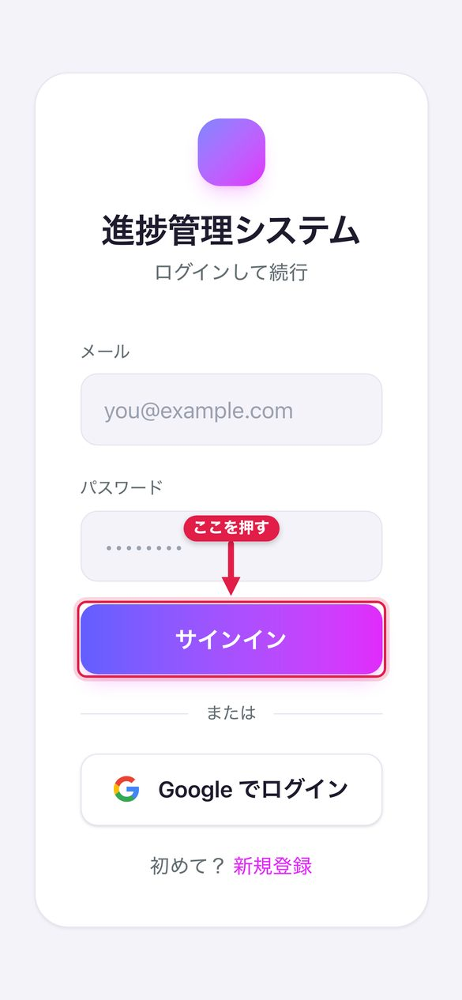
2-2. Googleアカウントでログイン（おすすめ）
STEP 1 ログイン画面の Google でログイン を押し、登録済みのメールアドレスのアカウントを選びます。
STEP 2 「Gmailで送信」の許可を求められたら許可します。以後メールは雄太郎様のGmailから送られます。
Googleでログインしていない間は、メールは管理者（西野 鷹也）のGmailから代理送信されます。取引先やドライバーに「雄太郎様から届いた」と分かるようにするには、一度Googleでログインしてください。
LINEなどアプリ内のブラウザではGoogleログインが使えません。SafariかChromeで開いてください。
LINEなどアプリ内のブラウザではGoogleログインが使えません。SafariかChromeで開いてください。
2-3. ログアウト・スマホのホーム画面に追加
- 画面右上の ログアウト を押すとログイン画面に戻ります。
- iPhoneはSafariの「共有」、AndroidはChromeのメニューから「ホーム画面に追加」でアプリのように使えます。
- パスワードを忘れた場合は再設定画面がありません。管理者（西野 鷹也）にご連絡ください。
3. 画面の構成（メニュー） 雄太郎様
画面左（スマホでは左上の ≡）にメニューがあります。雄太郎様に表示されるのは次の5つと、右上の ⚙ 設定 です。
| メニュー | できること | 章 |
|---|---|---|
| 📅 カレンダー | 日付をタップして稼働報告書を入力。メーター・レシートの写真読み取り。月の稼働日数・走行距離の集計。ドライバーの切替表示 | 7 |
| 🕒 勤怠 | 月ごとの稼働報告書を表形式で確認・修正。稼働報告書・請求書・立替金のExcel/PDF出力と申請 | 8 |
| 📄 請求書一覧 | 自分とドライバーの請求書・立替金の一覧。編集・承認・統合PDF・メール送付 | 9 |
| 📝 契約書 | 運送業務委託契約書の作成・メール送付・電子署名の回収・PDF保管 | 10・11 |
| 👥 ユーザー一覧 | ドライバーの追加と招待・権限の設定・招待メール再送・代理ログイン | 5・6・13 |
| ⚙ 設定（右上） | 締日・会社名・報酬形態・振込先・請求先マスタ | 4 |
ドライバーには 📅 カレンダー と 🕒 勤怠（権限を付ければ請求書・契約書も）だけが出ます。ユーザー一覧は雄太郎様のみ。
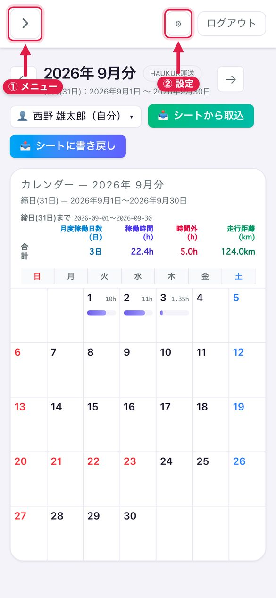
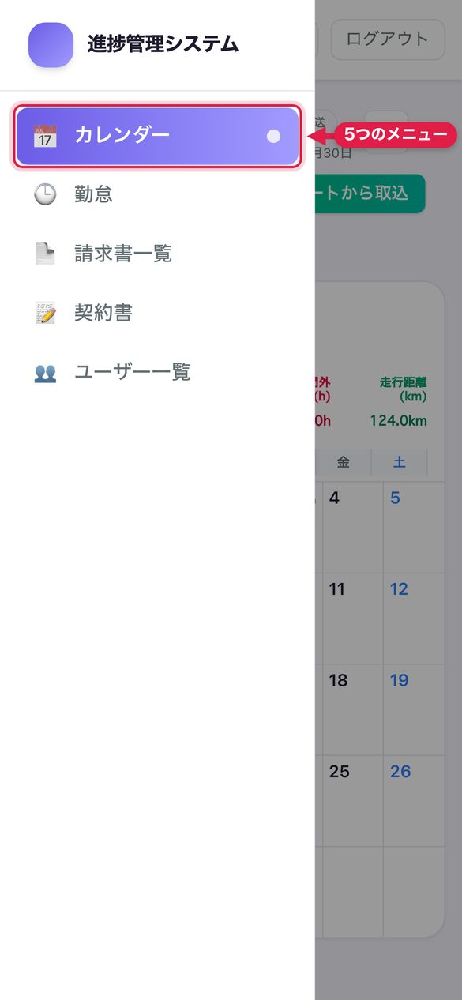
4. 最初に行う設定 雄太郎様
右上の ⚙ 設定 を押すと設定画面が開きます。上部のタブで切り替えます。運用に必要なのは「アカウント」と「請求書」の2つです（バックログ・GitHub・freee のタブは使いません）。
4-1. アカウント タブ
| 項目 | 設定内容 |
|---|---|
| 締日 | 現在は 末日（31）。ここで選んだ日でカレンダー・勤怠・請求書の集計期間が決まります（例: 25日 →「4月分」は 3/26〜4/25） |
| 会社（カレンダーの行に出る名前） | 「HAUKUR運送」。カレンダーの人物行の見出しに表示されます。代表者のみ変更できます |
| その他の項目（乗車区間・通勤日・APIキーなど） | 運送業務では使いません。空欄のままで問題ありません |
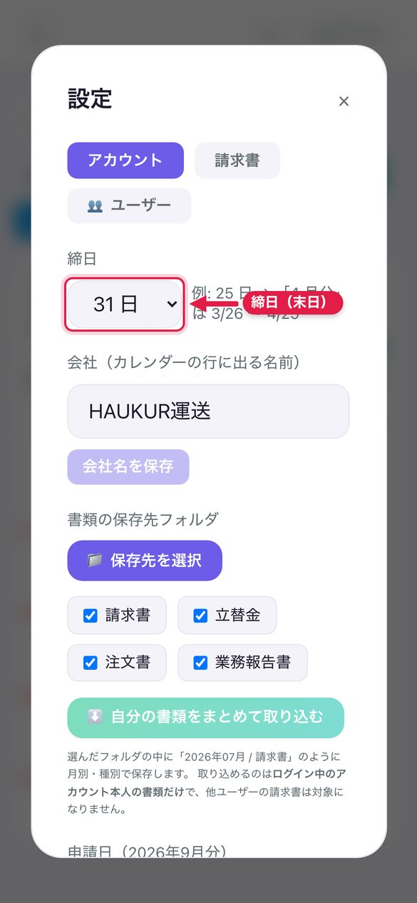
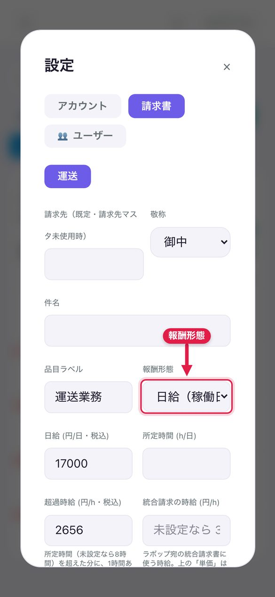
4-2. 請求書 タブ（報酬形態・振込先・請求先マスタ）
STEP 1 カテゴリは「運送」が選ばれています。「報酬形態」で 日給 か 時給 を選びます。
STEP 2 日給を選ぶと 日給・所定時間・超過単価 の欄が出ます（現在 17,000円／8h／2,656円）。
STEP 3 「振込先」に金融機関・口座番号・口座名義を入力します。請求書PDFの振込先欄に印字されます。
STEP 4 「請求先マスタ」で ＋ 追加 → 取引先名・敬称・件名・住所・TEL・担当者 を入れて保存します。
STEP 5 画面下の 保存 を押します。
請求先マスタに登録しておくと、請求書を作るときにプルダウンから選ぶだけで宛名が入ります。使わなくなった取引先は削除ではなく「アーカイブ」になり、過去の請求書の宛名はそのまま残ります。
超過単価が空欄・0なら 日給 ÷ 所定時間 × 1.25（労基法の割増率）で自動計算。単価が決まっているときは必ず入力を。
5. ドライバーの追加と招待 雄太郎様
5-1. ドライバーを追加して招待メールを送る
STEP 1 メニューの 👥 ユーザー一覧 を開きます。
STEP 2 「メールアドレス」と「表示名」を入力し 📧 追加して招待メールを送る を押します。
STEP 3 ドライバーに次のメールが届きます。追加した人は雄太郎様の管理対象になります。
📧 このとき届くメール 件名：【勤怠アプリ】西野 雄太郎さんから招待が届きました
運送外注 太郎 様 西野 雄太郎さんが勤怠アプリ（HAUKUR運送）にあなたを招待しました。 下記URLからパスワードを設定して、登録を完了してください（リンクの有効期限: 14日間）。 https://react-frontend-beige.vercel.app/invite/登録用リンク ※ Googleアカウント（このメールアドレス: unsou@gmail.com）をお持ちの場合は、 https://react-frontend-beige.vercel.app/sign_in の「Googleでログイン」からもそのまま利用を開始できます。 ご不明点があれば yutaro18551833@gmail.com までご連絡ください。 --- 勤怠アプリ
黄色の入りどころ：氏名・会社名＝⚙ 設定 → アカウント／宛名・メールアドレス＝この画面で入力した内容／リンク＝送信時に自動発行（14日有効）。文面は自動で、編集はできません。
追加したドライバーは、雄太郎様と同じ「運送」カテゴリ・末日締め・同じ画面権限で作られます。契約書に署名した相手を登録する場合は 12-1 の「📨 招待」ボタンからも登録できます。
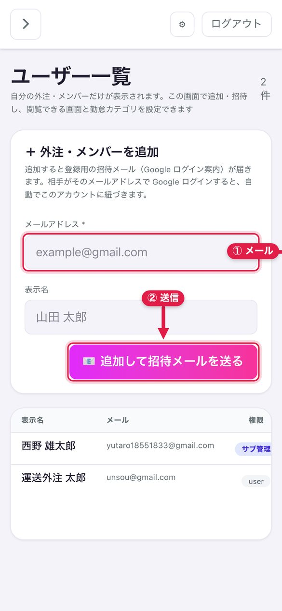
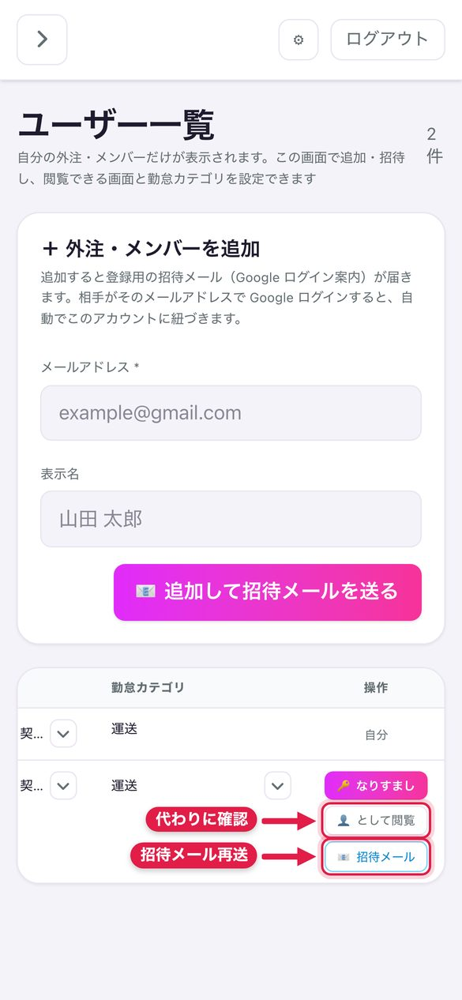
5-2. 招待メールを再送する
STEP 1 👥 ユーザー一覧 で対象ドライバーの行の 📧 招待メール を押すと再送されます。
6. ドライバー側の登録と権限 雄太郎様ドライバー
6-1. 招待メールから登録する ドライバー
STEP 1 招待メール内のリンクを開きます（有効期限は14日）。
STEP 2 「表示名」を確認し、パスワード（6文字以上）を2か所に入れて 登録を完了する を押します。
STEP 3 「🎉 登録が完了しました」と出たら アプリをはじめる でカレンダーが開きます。
📧 このとき届くメール（ドライバー本人宛） 件名：【勤怠アプリ】登録が完了しました
運送外注 太郎 様 勤怠アプリへの登録が完了しました。このメールは登録確認のお知らせです。 ログインはこちら: https://react-frontend-beige.vercel.app/sign_in メールアドレス: unsou@gmail.com --- 勤怠アプリ
黄色の入りどころ：登録時の表示名とメールアドレス。文面は自動で、編集はできません。
「⚠️ 招待リンクが無効です」と出た場合は期限切れです。雄太郎様に 5-2 の再送を依頼してください。同じリンクを2回使うことはできません（「✅ この招待は登録済みです」と表示）。
6-2. ドライバーの権限を変える
- 👥 ユーザー一覧 の各行で、見える画面（カレンダー・勤怠・請求書・契約書）と勤怠カテゴリを変更できます。
- 配布できるのは雄太郎様が持っている画面・カテゴリ（運送）だけです。カテゴリをすべて外すことはできません。
- 雄太郎様ご自身のカテゴリ・管理対象の付け替えは管理者（西野 鷹也）のみ変更できます。
7. カレンダーで稼働を入力する（稼働報告書） 雄太郎様ドライバー
紙の稼働報告書の代わりに、毎日の稼働をカレンダーから入力します。内容はそのまま勤怠と請求書の計算に使います。
7-1. その日の稼働を入力する
STEP 1 メニューの 📅 カレンダー を開き、日付をタップすると「稼働報告書」の入力画面が開きます。
STEP 2 ☑ 稼働 にチェックを入れます（チェックを外して保存すると、その日の稼働は削除されます）。
STEP 3 上から順に入力します（下表）。
| 項目 | 入力のしかた |
|---|---|
| 開始時間 ／ 終了時間 | 時刻を選びます。稼働時間はここから自動計算されます（日をまたぐ場合も対応） |
| 走行距離 (km) | その日の走行距離。小数点1桁まで入力できます |
| 備考欄 | 連絡事項・特記事項。高速代・駐車場代の内訳など |
| 検印 | 締日ごとの担当者確認用。一度保存したあとに 検印を押す が押せます。押すと日時が記録され、検印を解除 で取り消せます |
| 配送件数 (件) | その日の配送件数 |
| 開始メーター (km) ／ 終了メーター (km) | 📷 メーターを撮影 でメーターの写真を撮ると、AIが数値を読み取って自動入力します（8-1） |
| 実費レシート（ガソリン代） | 📷 レシートを撮影して金額を自動入力 でレシートを撮ると、AIが税込金額を読み取ります。複数枚可（8-2） |
| 実費合計 (円) | レシートの金額が自動で合算されます。必要なら手で直せます |
STEP 4 保存 を押します。「稼働報告を保存しました」と表示されれば完了です。
後から直したいときは同じ日付をタップして修正し、もう一度 保存 を押します。
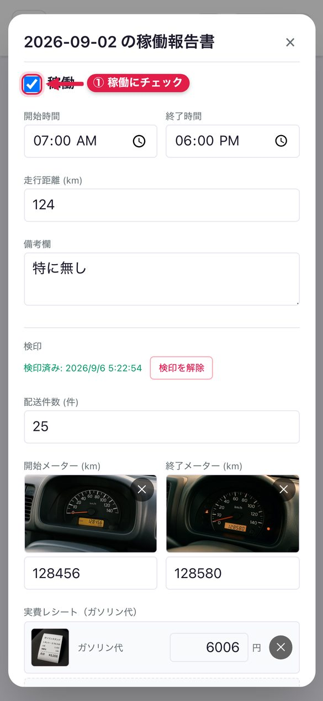
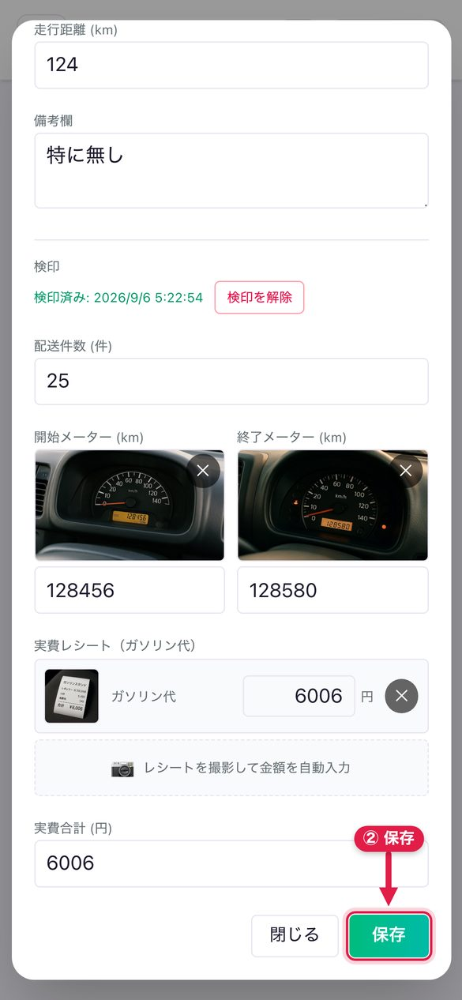
7-2. 月の集計を見る・ドライバーを切り替える
- カレンダー上部に 月度稼働日数(日)・稼働時間(h)・時間外(h)・走行距離(km) の月集計が表示されます（1日〜末日）。時間外は日給制のときだけ表示されます。
- 雄太郎様は上部の「👤」の人物選択でドライバーを切り替え、そのドライバーの稼働を確認・代理入力できます。ドライバー本人には自分の行だけが表示されます。
- ← → で前月・翌月に移動します。
8. 写真から自動で入力する（メーター・レシート） 雄太郎様ドライバー
メーターとガソリン代は、写真を撮るだけでAIが数値を読み取り、そのまま欄に入ります。手打ちは不要です。
8-1. メーターを写真で読み取る
STEP 1 「開始メーター (km)」の 📷 メーターを撮影 を押し、カメラで撮影します（写真の選択も可）。
STEP 2 「🤖 AI読取中…」と表示され、数秒で数値が入ります。結果を確認し、違っていれば直します。
STEP 3 終了時も同じ手順で「終了メーター (km)」を撮影します。
写真を添付していない間は数値欄が入力できません（写真と数値のずれを防ぐため）。写真の ✕ を押すと数値も消えます。終了メーターが開始メーターより小さいと「終了メーターは開始メーターより小さい値にできません」と表示され保存できません。
8-2. ガソリン代などのレシートを読み取る
STEP 1 「実費レシート（ガソリン代）」の 📷 レシートを撮影して金額を自動入力 を押し、撮影します。
STEP 2 1枚ごとに金額欄が増え、AIが読み取った税込額が入ります。違えば直し、不要な行は ✕ で消します。
STEP 3 「実費合計 (円)」に合計が自動で入ります。保存すると勤怠の実費と請求書の立替金に反映されます。
レシートは1日に何枚でも追加できます。高速代・駐車場代のレシートも同じ手順で入れられます。
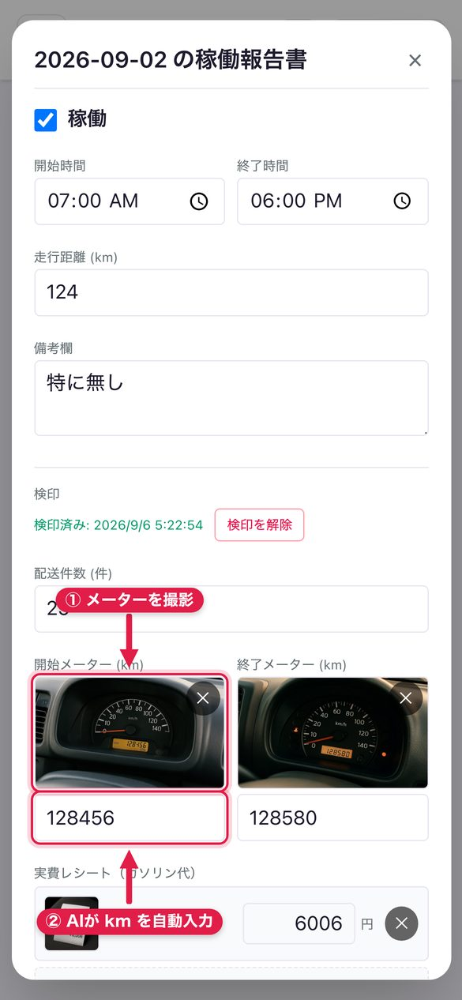
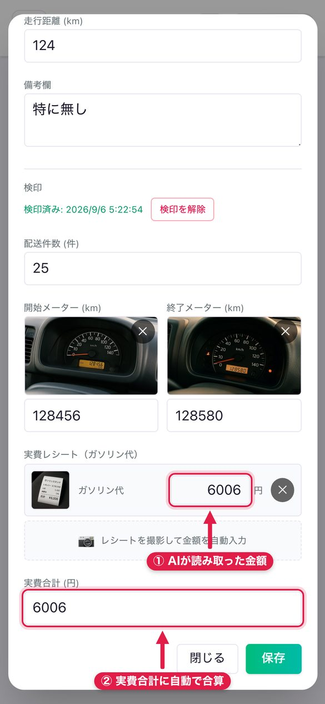
9. 勤怠画面で月の稼働を確認・修正する 雄太郎様ドライバー
メニューの 🕒 勤怠 は、カレンダーの1か月分を表で見る画面です。同じデータで、どちらで直しても反映されます。
9-1. 稼働報告書の表
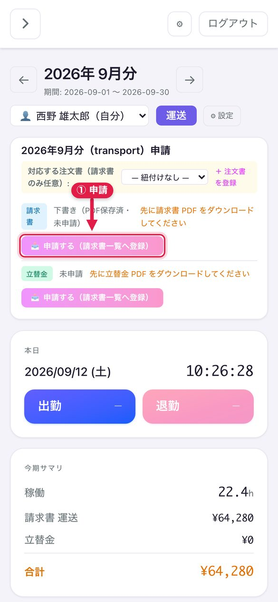
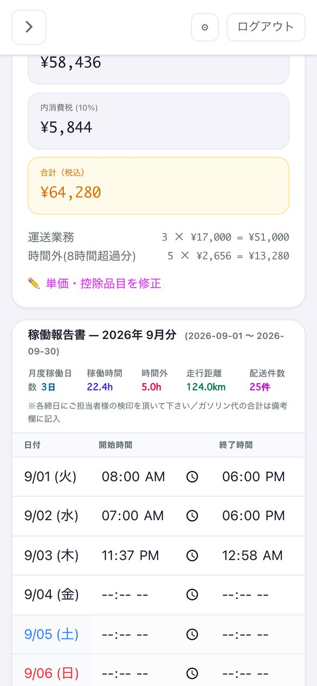
STEP 1 上部の ← → で月を切り替えます。「期間: ○月1日 〜 ○月末日」が表示されます。
STEP 2 表のセルを直接編集すると自動保存されます（保存直後に ✓、保存済みで ● が出ます）。
STEP 3 表の下に 稼働日数・稼働時間・時間外・走行距離・配送件数 の合計が出ます（紙の提出は不要）。
スマホでは表が横にスクロールし、日付列は固定されます。1行の全項目を空にすると、その日の稼働は削除されます。
勤怠画面の表ではメーター・レシートの写真は扱えません（数値入力のみ）。写真の読み取りはカレンダー（8章）で行います。
9-2. 請求書・稼働報告書・立替金のファイルを出す
- 請求書カードに、その月の 稼働時間・小計・消費税・合計 が自動計算されます（日給×稼働日数＋時間外）。
- 📥 ダウンロード で請求書PDF・稼働報告書Excel・立替金PDFを保存できます。📂 フォルダを選んで…保存 でパソコンの指定フォルダに直接保存できます（2回目以降は 📁 … に保存 でワンタッチ）。
- 「立替金」欄には、カレンダーの実費（ガソリン代など）が自動で並びます。＋ 立替金を追加 で手入力も可。
9-3. 請求書・立替金を申請する
STEP 1 まず 📥 ダウンロード で請求書PDFを確認します（確認するまで申請は押せません）。
STEP 2 📤 申請する（請求書一覧へ登録） を押すと、請求書一覧に「申請中」で登録されます。
STEP 3 修正して出し直す場合は 🔁 再申請（同月分を上書き）、取り下げる場合は ↩ 取消 を押します。
ドライバーも同じ手順で自分の分（支払明細＝HAUKUR運送への請求）を申請し、雄太郎様が 9-3 で承認します。
10. 請求書 雄太郎様
メニューの 📄 請求書一覧 には、ご自身とドライバー全員の請求書・立替金の申請が並びます。
10-1. ステータスの意味
| 表示 | 意味 | できる操作 |
|---|---|---|
| 下書き | 作成しただけ。まだ申請していない | ✏️ 編集 ／ 📤 申請 ／ 🗑 削除 |
| 申請中 | 申請済みで承認待ち | ✏️ 編集 ／ ✅ 承認 ／ 却下 |
| 承認済 | 承認済み。統合PDF・メール送付の対象 | PDF ／ 🔗 統合PDF ／ 📧 メール送付 |
| 却下 | 差し戻し。9-3 の再申請で出し直す | — |
削除できるのは「下書き」だけです。スマホでは各行がカードになり、📤 申請 ✅ 承認 🗑 削除 がカード下部に出ます。絞り込みは 🔎 フィルター を開くとステータス・申請者・月・キーワードで行えます。
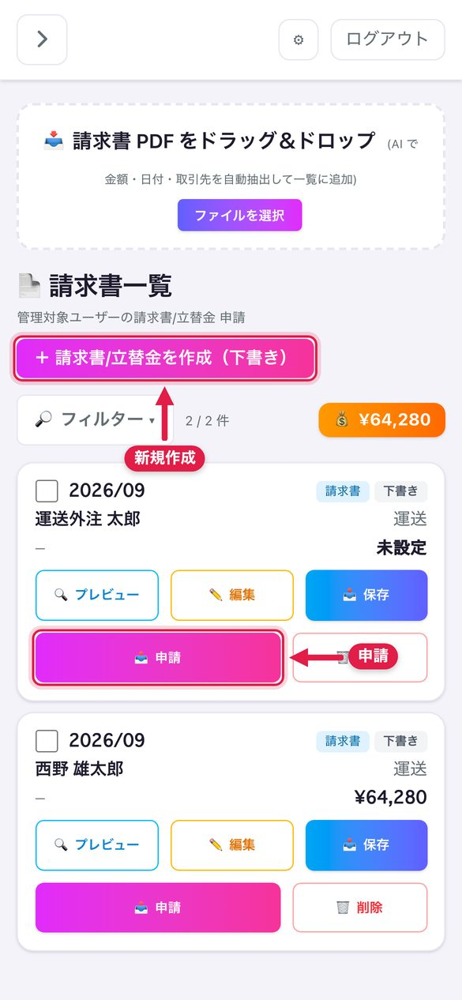
10-2. 請求書を新しく作る（勤怠を経由しない場合）
STEP 1 ＋ 請求書/立替金を作成（下書き） を押します。
STEP 2 「申請者ユーザー」と 年・月・カテゴリ（運送）・種別（請求書／立替金）を選びます。
STEP 3 「請求先（宛先）」と「振込先（口座）」を入れます（郵便番号＋🔍 検索 で住所が入ります）。
STEP 4 💾 作成のみ（下書き保存） を押します。一覧に「下書き」として追加されます。
10-3. ドライバーの申請を確認して承認する
STEP 1 一覧で「申請中」の行を探し、PDF で内容（稼働日数・金額・立替金）を確認します。
STEP 2 直すときは ✏️ 編集 → 各欄を修正 → 💾 保存（合計は明細から自動計算）。
立替金（高速代・駐車場代）は自動で表に出ます。追加・修正はカレンダー側で行います。
STEP 3 問題なければ ✅ 承認、差し戻すなら 却下 を押します。「承認しました」と表示されます。
10-4. 複数の請求書を1つのPDFにまとめる
STEP 1 承認済みの請求書の左端チェックボックスを2件以上チェックします。
STEP 2 🔗 承認N件を統合PDF を押すと、1つのPDFに結合されます（宛名は請求先マスタの宛名を使用）。
統合できるのは「承認済み」だけです。下書き・申請中が混ざると「統合できるのは「承認済み」の申請だけです」と出ます。
10-5. 取引先へメールで送る
STEP 1 送りたい請求書をチェックし 📧 選択N件をメール送付 を押します。
STEP 2 「宛先」に取引先のメールアドレスを入力します（件名・本文は自動作成。🤖 AI で再生成 も可）。
STEP 3 📧 一括送信 (N件) を押すと、請求書PDFを添付して送信されます。
勤怠画面（9章）の請求書カードにある 📧 メール送付 からも、自分のその月の請求書を単独で送れます。
11. 業務委託契約書を作って送る 雄太郎様取引先
「運送業務委託契約書（全29条・6ページ）」を雄太郎様が甲、相手（ドライバー・協力会社）が乙として作成し、相手にはメールのリンクからスマホで署名してもらいます。紙のやり取りは不要です。
11-1. 状態の流れ
下書き→ 📧 送付 →
送付済→ 相手が署名 →
署名済（変更不可）→
📨 招待でユーザー登録
- 「送付済」の契約書だけ 🚫 無効にする ができます。「署名済」は改ざん防止のため変更・無効化できません。
- 🗑 削除 ができるのは「下書き」だけです。
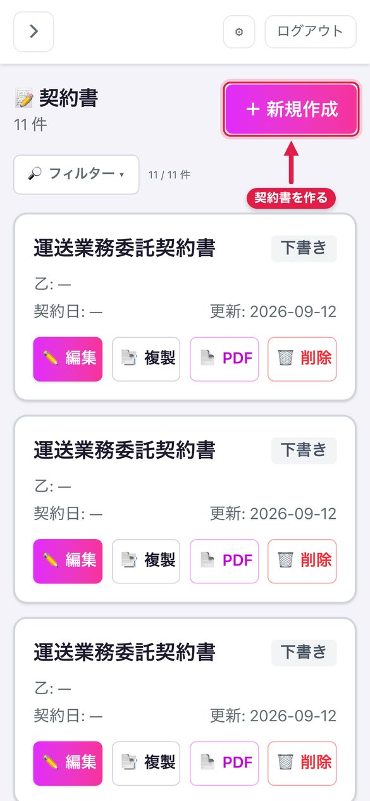
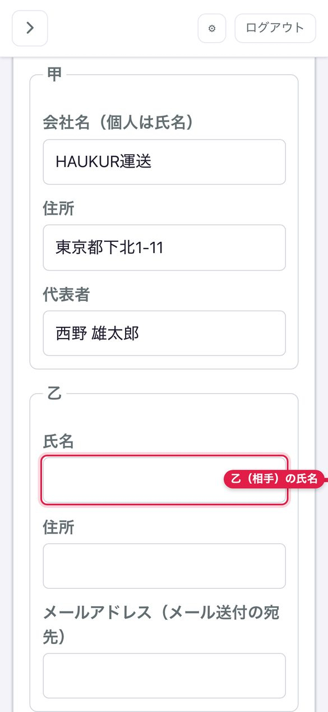
11-2. 契約書を作って送る
STEP 1 メニューの 📝 契約書 → ＋ 新規作成 を押します（29条の雛形が開きます）。
STEP 2 甲を確認し、乙の 氏名・住所・メールアドレス と 契約日・開始日・終了日 を入力します。
STEP 3 条文は ＋ 条文を追加／✕ 削除／ドラッグで並べ替えできます（個別条件は「特記事項」へ）。
STEP 4 💾 保存 → 📄 PDF プレビュー で仕上がりを確認します（甲の印影は自動）。
STEP 5 📧 メールで送付 を押し、宛先・件名・本文を確認します。
STEP 6 🤖 AI添削 で整え、📤 送信する を押すと状態が「送付済」になります。
📧 このとき送られるメール（送信前に書き替えられます） 件名：【運送業務委託契約書】ご署名のお願い
乙の氏名 様 お世話になっております。西野 雄太郎です。 「運送業務委託契約書」をお送りいたします。 内容をご確認のうえ、下記リンクより電子署名をお願いいたします。 {署名URL} ※リンクの有効期限は送信から30日です。 ※ご不明点がありましたら、このメールへの返信にてご連絡ください。 西野 雄太郎
黄色の入りどころ：乙の氏名・タイトル＝この契約書の入力欄／差出人＝⚙ 設定 → アカウントの表示名／{署名URL} ＝送信時に実際のリンク（30日有効）へ自動で置き換わります。
メール以外で渡したいときは 🔗 署名リンクを発行 → 📋 コピー または LINE で送る が使えます。リンクの有効期限は30日です。再発行・再送すると古いリンクは無効になります。
12. 契約書の署名から保管まで 雄太郎様取引先
12-1. 相手が署名する
STEP 1 取引先 メールのリンクを開くと契約書の全文が表示されます（ログイン不要）。
STEP 2 取引先 「署名者名」を入力して署名し、2つの同意にチェックして 署名して送信 を押します。
STEP 3 雄太郎様に次のメールが届き、状態が「署名済」になります（以後この契約書は変更できません）。
📧 このとき届くメール（雄太郎様宛） 件名：【勤怠アプリ】乙の氏名さんが契約書に署名しました
西野 雄太郎 様 「運送業務委託契約書」に署名がありました。 署名者: 署名者名 乙の氏名: 乙の氏名 メールアドレス: 乙のメールアドレス 内容を確認のうえ、アプリの契約書一覧で「📨 招待」を押すと、 上記メールアドレスへ登録用の招待メールが送られ、ユーザーとして登録されます。 https://react-frontend-beige.vercel.app/contracts --- 勤怠アプリ
黄色の入りどころ：署名者名＝相手が署名画面で入力した名前／乙の氏名・メールアドレス＝契約書の「乙」欄。文面は自動で、編集はできません。
STEP 4 相手をドライバーにする場合は一覧の 📨 招待 を押します（以後は ✅ 登録済 と 📨 再送）。
STEP 5 📄 PDF で個別に開けます。期間で絞り 🗂 一括ダウンロード (N件) でzip保存できます。
12-2. その他の操作
- 📑 複製：署名済みの契約書を元に新しい下書きを作ります（更新契約・別の相手への流用に）。
- ✏️ 編集：下書き・送付済の内容を修正します。修正後は 📧 メールで送付 し、新しいリンクを送ります。
- 🔎 フィルター（スマホ）：乙の氏名・タイトルの部分一致で検索できます。
13. メール送信のまとめ 雄太郎様
| いつ | 誰に届く | 件名・内容 |
|---|---|---|
| ドライバー追加（5-1）／招待メール再送（5-2）／契約書の 📨 招待（12-1） | ドライバー・乙 | 「【勤怠アプリ】西野 雄太郎さんから招待が届きました」＋登録URL（14日有効） |
| ドライバーが登録完了したとき | ドライバー本人 | 「【勤怠アプリ】登録が完了しました」 |
| 契約書の 📧 メールで送付（11-2） | 乙 | 「【運送業務委託契約書】ご署名のお願い」＋署名URL（30日有効） |
| 乙が署名したとき | 雄太郎様 | 「【勤怠アプリ】○○さんが契約書に署名しました」 |
| 請求書の 📧 メール送付（10-5、9-2） | 取引先の担当者 | 請求書PDF添付。件名・本文は自動生成（AI再生成可） |
- 送信元：雄太郎様がGoogleでログイン済みなら雄太郎様のGmail（yutaro18551833@gmail.com）から送られます。未連携の間は管理者（西野 鷹也）のGmailから、差出人名だけ「西野 雄太郎」で送られます。
- AI添削・再生成：文章の体裁を整えるだけで、URLや金額などは変わりません。AIが使えないときは入力した文面がそのまま送られます（エラーにはなりません）。
- 送信後の取り消しはできません。宛先を間違えたら正しい宛先へ送り直します（再送で古いリンクは無効に）。
14. ドライバーの画面を代わりに確認する 雄太郎様
STEP 1 👥 ユーザー一覧 でドライバーの行の 🔑 なりすまし を押すと、その人の画面になります。
STEP 2 上部の「なりすまし中」バナーの 管理者に戻る で自分のアカウントに戻ります。
入力せずに勤怠を見るだけなら 👤 として閲覧 を押すと、勤怠画面がそのドライバーの内容で開きます。
15. よくある質問・困ったとき
| 症状・質問 | 対処 |
|---|---|
| パスワードを忘れた | 再設定画面はありません。管理者（西野 鷹也）に連絡してください。Googleでログインすればパスワードは不要です。 |
| 「Google でログイン」を押しても失敗する | LINE等のアプリ内ブラウザでは使えません。SafariかChromeでURLを開いてください。登録済みと同じメールアドレスのGoogleアカウントを選んでください。 |
| 設定を変えたのに請求金額が変わらない | 請求書設定は「運送」カテゴリで保存されているか確認してください。勤怠画面を再読み込みすると再計算されます。既に申請済みの請求書は金額が固定されるため、🔁 再申請で出し直してください。 |
| メーターの数値欄が入力できない | 写真を添付すると入力できるようになります。写真が撮れない場合は 🕒 勤怠 の表から直接数値を入力してください。 |
| AIの読み取り値が違う | 読み取り後に数値を手で直して保存してください。暗い・ぶれた写真は誤読しやすいので撮り直しが確実です。 |
| 申請ボタンが押せない | 先に請求書PDFをダウンロードしてください（内容確認のため必須にしています）。 |
| 請求書を削除したい | 削除できるのは「下書き」だけです。申請中は ↩ 取消 で未申請に戻してから削除します。 |
| 契約書の送付先メールを間違えた | もう一度 📧 メールで送付 で正しい宛先へ送ってください。新しいリンクが発行され、古いリンクは無効になります。 |
| 署名済みの契約書を直したい | 署名済みは変更できません。📑 複製 で新しい下書きを作り、再度署名を取り交わしてください。 |
| 相手が「この契約書は無効になっています」と言われた | リンクの期限切れ（30日）か、再送で古いリンクが無効になっています。最新のメールのリンクを使うよう伝えるか、再送してください。 |
| ドライバーが招待メールを受け取っていない | 迷惑メールフォルダを確認してもらい、👥 ユーザー一覧 → 📧 招待メール で再送してください。 |
| ドライバーの承認ボタンが出ない | 承認できるのは HAUKUR運送に所属するドライバーの「申請中」だけです。下書きのままなら本人に 📤 申請 をしてもらってください。 |
| スマホで表が見切れる | 稼働報告書の表は横にスクロールします。フィルターは 🔎 フィルター を押すと開きます。 |